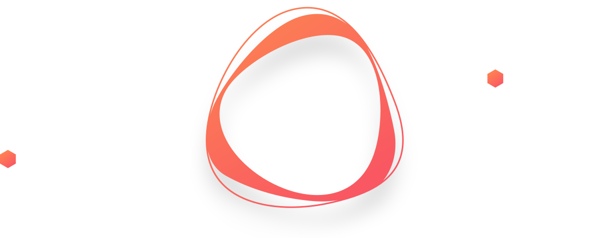
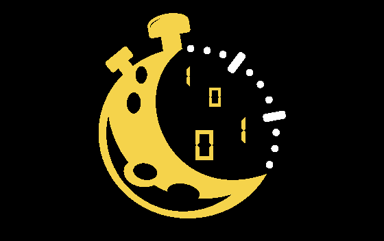
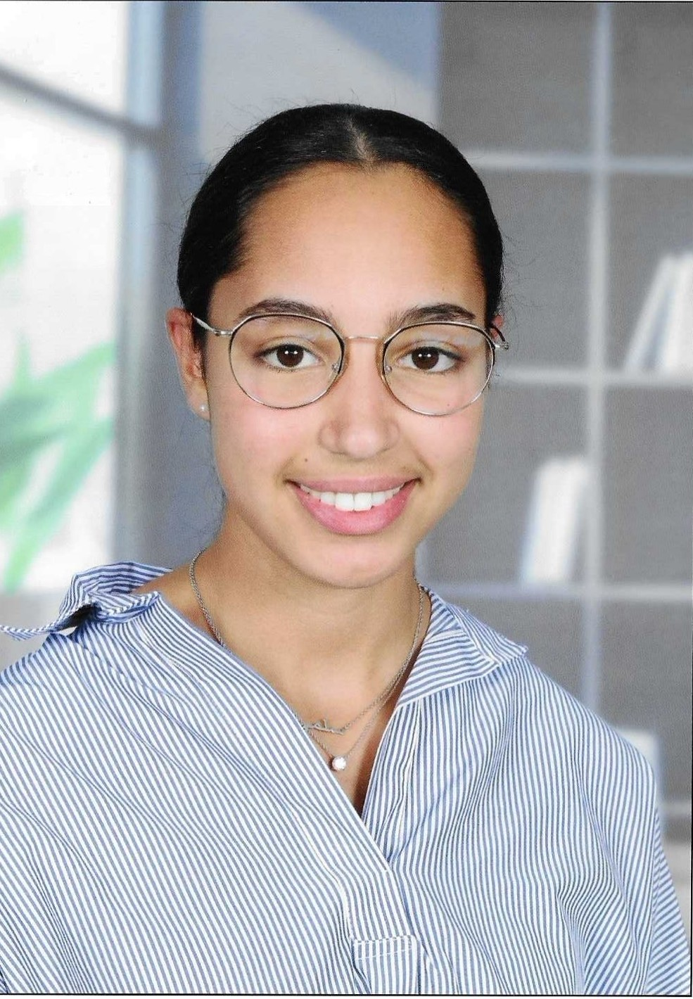

Mes Projets

Organisation des 24h de l'info édition 2024
Concours réunissant tous les IUT de France afin de s’affronter sur des épreuves d’informatique durant 24h sans interruption. Notre site

Le BUT Informatique est une formation professionnalisante sur trois ans, basée sur l’acquisition de compétences techniques solides en développement, gestion de bases de données, réseaux et systèmes, tout en misant fortement sur la pratique. Les enseignements sont structurés autour de projets concrets, réalisés en groupe et en autonomie. Ces projets permettent de développer des compétences transversales : rigueur, collaboration, gestion de projet et autonomie. Grâce à ces mises en situation professionnel et à aux périodes de stage ou d’alternance, nous sommes préparés à nous intégrer rapidement au sein d'une entreprise ou à poursuivre vers des études supérieures en école d'ingénieur ou en Master.
Concevoir, coder, tester et intégrer des solutions.
Cette compétence consiste à maîtriser les
bonnes pratiques de développement d'application informatique simple,
à partir des exigences jusqu'à une application complète. Puis dans
un second temps, à savoir adapter des applications sur un
ensemble de supports.
Améliorer les performances et l'efficacité des applications informatiques.
Cette compétence consiste à concevoir et élaborer des algorithmes
et séléctionner les algorithmes les plus adaptés pour répondre à un besoin.
Cette compétence m'apprend à élaborer des algorithmes et à choisir
ceux qui répondent le mieux à mes besoins.
Gérer des systèmes interconnectés et assurer leur bon fonctionnement.
Cette compétence m'apporte des connaissances en système et en réseau. Je peux ainsi
installer, cofigurer et gérer des environnements informatiques complexes.
L'installation et la configuration d'un poste de travail est une compétence clé pour
un professionnel de l'informatique. J'ai pu m'en rendre compte de l'importance de cette compétence
lors de mon premier stage chez Sage.
Manipuler et organiser les données de manière efficace.
Grâce à cette compétence, je suis capable de concevoir des modèles de données
adaptés aux besoins et de les implémenter dans des bases de données solide
tout en assurant l'intégrité la sécurité et la performance des données.
Planifier et exécuter des projets informatiques.
Grâce à cette compétence, Je suis capable d’organiser et de piloter un projet informatique de A à Z :
définir les objectifs, planifier les tâches, coordonner l’équipe, suivre l’avancement
et m’assurer que le résultat final répond aux attentes établies lors du recueil de besoins.
Travailler efficacement en équipe pour atteindre des objectifs communs.
Mon parcours, aux nombreux projets de groupe, m'a permis d'acquiérir de
bonnes capacités de collaboration tout en appliquant des méthodologies agiles et des outils de suivi.
Cette compétence est essentielle dans le domaine de l'informatique, car la plupart des projets
se réalise en équipe.


Pour cette première expeirence en milieu professionnel, j'ai eu l'opportunité d'intégrer l'entreprise Sage pour 8 semaines. Ainsi, j'ai travaillé sur l'ERP Sage X3, logiciel de gestion pour les PME-PMI et grands groupes. J'ai principalement pris en charge la création d’une opération, pour l’intégration d’Anvyl avec Sage X3, du développement à l'intégration en passant par les tests et la documentation.
Ce stage a été une expérience extrêmement enrichissante, tant sur le plan professionnel que personnel. Il m’a permis de découvrir le développement logiciel dans un cadre concret, de collaborer efficacement au sein d’une équipe et de développer mes compétences en gestion de projet, gestion de données, méthodologie Agile, ainsi que mes savoir-faire techniques (notamment en GraphQL). Cette immersion dans un environnement exigeant a aussi renforcé mes qualités d’adaptation et de communication en français et en anglais. Ce stage m’a ainsi confortée dans mon choix de me diriger vers une carrière dans le domaine du développement logiciel et m’a donné de solides atouts à valoriser dans mes futures expériences.
X3 - GraphQL - Test automatisés - Création d'opération - Méthode Agile - ERP Sage X3
Mon rapport de stage